Brain image morphometry is almost universally restricted to computing volumes and thicknesses of brain regions. To better characterize the anatomy and shapes of brains, I oversaw the construction of a new brain labeling protocol, the world's largest manually labeled set of brain images, and the open source mindboggle software for automated brain feature extraction, labeling, and shape analysis. I also helped develop a new method called "concurrence topology" for analyzing high-order relationships in temporal data (such as functional brain imaging data) using persistence homology. While developing these methods, I needed to know which preprocessing approaches to choose, which led me to conduct the largest registration and brain extraction evaluation studies ever conducted.
Brain image analysis

Mindboggle brain image analysis software
Mindboggle (mindboggle.info) is open-source software for the analysis (feature extraction, labeling, and morphometry) of human brain imaging data. Features include anatomical regions (like gyri and subcortical regions), sulcal folds, and fundus curves. Shape measures include two types of depth, two types of curvature, volume, thickness, Zernike moments, Laplace-Beltrami spectra, etc. The project has been funded by three NIH grants, and is maintained by the Computational Neuroimaging Lab at the Child Mind Institute.
Publications

Y Zhao, A Klein, FX Castellanos, MP Milham. Brain age prediction: cortical and subcortical shape covariation in the developing human brain. NeuroImage 202: 116149 (2019). doi:10.1016/j.neuroimage.2019.116149
A Klein, SS Ghosh, FS Bao, J Giard, Y Hame, E Stavsky, N Lee, B Rossa, M Reuter, EC Neto, A Keshavan. Mindboggling morphometry of human brains. PLoS Computational Biology 13(3): e1005350 (2017). doi:10.1371/journal.pcbi.1005350
MP Milham, RC Craddock, A Klein. Clinically useful brain imaging for neuropsychiatry: How can we get there? Depression and Anxiety 2017:1-10 (2017). doi:10.1002/da.22627
A Klein. Mindboggle-101 templates (unlabeled images from a population of brains). Harvard Dataverse (2017). doi:10.7910/DVN/WDIYB5

GI Allen, N Amoroso, C Anghel, V Balagurusamy, CJ Bare, D Beaton, R Bellotti, DA Bennett, K Boehme, PC Boutros, L Caberlotto, C Caloian, F Campbell, E Chaibub Neto, Y-C Chang, B Chen, C-Y Chen, T-Y Chien, T Clark, S Das, C Davatzikos, J Deng, D Dillenberger, RJB Dobson, Q Dong, J Doshi, D Duma,… A Klein, … X Zhan, Y Zhou, F Zhu, H Zhu, S Zhu, Alzheimer's Disease Neuroimaging Initiative. Crowdsourced estimation of cognitive decline and resilience in Alzheimer's disease. Alzheimer's & Dementia 12(6): 645-653 (2016). PMID: 27079753. doi:10.1016/j.jalz.2016.02.006

TJ Tustison, PA Cook, A Klein, G Song, SR Das, JT Duda, BM Kandel, N van Strien, JR Stone, JC Gee, BB Avants. Large-scale evaluation of ANTs and FreeSurfer cortical thickness measurements. NeuroImage. 99:166-179 (2014). doi:10.1016/j.neuroimage.2014.05.044
A Klein, J Tourville. 101 labeled brain images and a consistent human cortical labeling protocol. Frontiers in Brain Imaging Methods. 6:171 (2012). doi:10.3389/fnins.2012.00171. Data.
BB Avants, NJ Tustison, G Song, PA Cook, A Klein, JC Gee. A reproducible evaluation of ANTs similarity metric performance in brain image registration. NeuroImage. 54(3): 2033-2044 (2011). PMCID: PMC3065962.
A Klein, SS Ghosh, B Avants, BTT Yeo, B Fischl, B Ardekani, JC Gee, JJ Mann, RV Parsey. Evaluation of volume-based and surface-based brain image registration methods. NeuroImage. 51: 214-220 (2010). PMCID: PMC2862732.

A Klein, J Andersson, BA Ardekani, J Ashburner, B Avants, M-C Chiang, GE Christensen, DL Collins, J Gee, P Hellier, JH Song, M Jenkinson, C Lepage, D Rueckert, P Thompson, T Vercauteren, RP Woods, JJ Mann, RV Parsey. Evaluation of 14 nonlinear deformation algorithms applied to human brain MRI registration. NeuroImage. 46(3): 786-802 (2009). PMCID: PMC2747506. Data.

A Klein, B Mensh, S Ghosh, J Tourville, J Hirsch. Mindboggle: Automated brain labeling with multiple atlases. BMC Medical Imaging. 5:7 (2005). PMCID: PMC1283974

A Klein, J Hirsch. Mindboggle: A scatterbrained approach to automate brain labeling. NeuroImage. 24(2): 261-280 (2005). PMID: 15627570
Proceedings and proposals
A Klein, S Ghosh. Graph-based clinical diagnosis and prediction using multi-modal neuroimaging data (NIH proposal). Research Ideas and Outcomes. 2: e8835 (2016). doi:10.3897/rio.2.e8835
A Klein. Brain Graph Interface (NIH proposal). Research Ideas and Outcomes. 2: e8817 (2016). doi:10.3897/rio.2.e8817
A Klein. A game for crowdsourcing the segmentation of BigBrain data (NIH proposal). Research Ideas and Outcomes. 2: e8816 (2016). doi:10.3897/rio.2.e8816
A Klein, S Ghosh. A Million Brains in the Cloud. Research Ideas and Outcomes. 2: e8812 (2016). doi:10.3897/rio.2.e8812
BN Nichols, JB Poline, RA Poldrack, A Klein, D Kwon, W Chu, KM Pohl. Implementing Semantics-Driven Data Exchange in Brain Science: The NCANDA Case Study. Big Data to Knowledge All Hands Grantee Meeting (2015). National Institutes of Health, Bethesda, MD.

DB Keator, J Poline, BN Nichols, SS Ghosh, C Maumet, KJ Gorgolewski, T Auer, C Craddock, G Chen, G Flandin, YO Halchenko, M Hanke, C Haselgrove, K Helmer, M Jenkinson, A Klein, L Lanyon, D Marcus, D Margulies, F Michel, TE Nichols, RA Poldrack, R Reynolds, Z Saad, T Schmah, J Steffener, JA Turner, JD Van Horn, S Das, DN Kennedy. Standardizing metadata in brain imaging. Neuroinformatics 2015. doi:10.3389/conf.fnins.2015.91.00004

A Klein, EC Neto, S Ghosh, ADNI. Detailed shape analysis of healthy brains and brains with Alzheimer's disease. Human Brain Mapping 2015 (Honolulu, Hawaii).
B Landman, Z Xu, JE Igelsias, M Styner, TR Langerak, A Klein. MICCAI Multi-Atlas Labeling Beyond the Cranial Vault — Workshop and Challenge. Medical Image Computing and Computer Assisted Intervention (MICCAI) 2015 (Munich, Germany). doi:10.7303/syn3193805
JB Poline, S Das, DB Keator, KJ Gorgolewski, T Auer, G Chen, RC Craddock, … A Klein, et al. How to make brain imaging research efficient and reproducible: building software and standards. 21st Annual Meeting of the Organization for Human Brain Mapping (2015).
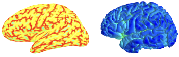
A Klein, EN Neto, J Giard, F Bao, Y Hame, M Reuter, N Tustison, B Avants, J Tourville, H Dai, N Nichols, S Ghosh. Shape analysis of 101 healthy human brains. Human Brain Mapping 2014 (Hamburg, Germany).
DB Keator, SS Ghosh, C Maumet, G Flandin, BN Nichols, TE Nichols, GA Burns, … A Klein, et al. Developing and using the Neuroimaging and Data Sharing Data Model: the NIDASH Working Group. 20th Annual Meeting of the Organization for Human Brain Mapping (2014).
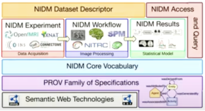
DB Keator, SS Ghosh, C Maumet, G Flandin, BN Nichols, TE Nichols, GA Burns, R Bruehl, C Craddock, B Federick, K Gorgolewski, YO Halchenko, M Hanke, C Haselgrove, K Helmer, A Klein, D Marcus, M Milham, F Michel, R Poldrack, J Steffener, Y Schwartz, RM Stoner, JA Turner, DN Kennedy, J Poline. Developing and using the data models for neuroimaging: the NIDASH Working Group. Neuroinformatics 2014. Presentation.
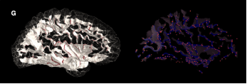
A Klein, N Nichols, D Haehn. Mindboggle 2 interface: online visualization of extracted brain features with XTK. 5th INCF Congress of Neuroinformatics (2014). doi:10.3389/conf.fninf.2014.08.00086
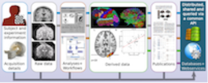
S Ghosh, A Keshavan, J Salvatore, A Klein. BIPS: A framework for curating and executing brain imaging pipelines. Neuroinformatics 2014. doi:10.3389/conf.fninf.2014.08.00053
A Klein, H Dai. Detailed shape analysis of brains with Alzheimer’s disease. Neuroinformatics 2014.
A Klein, Y Häme, F Bao, J Giard, O Coulon, D Rivière, G Li. Evaluation of methods for extracting sulcal fundi from human brain MRI data. 20th Annual Meeting of the Organization for Human Brain Mapping (2014).
A Klein, J Giard, FS Bao, M Reuter, E Stavsky, Y Hame, BN Nichols, … et al. Large-scale shape analysis of human brain MRI data. Neuroinformatics 2013.
FS Bao, J Giard, J Tourville, A Klein. Automated extraction of nested sulcus features from human brain MRI data. 34th Annual International Conference of the IEEE Engineering in Medicine and Biology Society (2012): 4429-4433. doi:10.1109/EMBC.2012.6346949
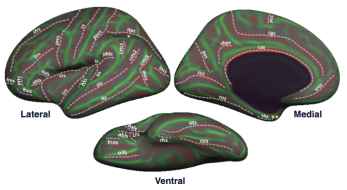
J Tourville, A Klein. 101 labeled brains and a new human cortical labeling protocol. Neuroinformatics 2012 (Munich, Germany).
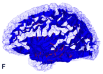
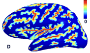
A Klein, FS Bao, Y Hame, E Stavsky, J Giard, D Haehn, N Nichols, SS Ghosh. Mindboggle: Automated human brain MRI feature extraction, labeling, morphometry, and online visualization. Neuroinformatics 2012 (Munich, Germany).
A Klein, S Ghosh, F Bao, J Giard, E Stavsky, Y Häme, R Parsey. Automated identification of human brain features using multi-atlas, registration-based segmentation. 18th Annual Meeting of the Organization for Human Brain Mapping (2012).
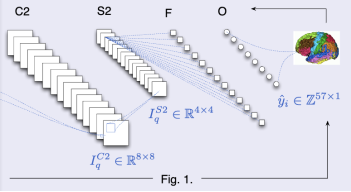
N Lee, AF Laine, A Klein. Towards a deep learning approach to brain parcellation. IEEE International Symposium on Biomedical Imaging: From Nano to Macro (2011): 321-324. doi:10.1109/ISBI.2011.5872414
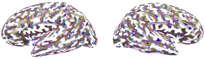
F Bao, N Lee, Y Hame, K Im, D Riviere, G Li, A Klein. Automated extraction of nested sulcal features from human brain MRI data. 17th Annual Meeting for the Organization of Human Brain Mapping (2011). GitHub repo.
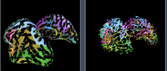
N Lee, A Klein. A graph-based database of hierarchical brain features. Neuroinformatics 2011. doi:10.3389/conf.fninf.2011.08.00139
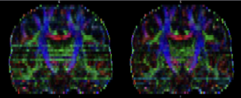
D Peruzzo, A Bertoldo, R Parsey, A Klein. Automatic detection of corrupted volumes in DTI data. 28th Annual Meeting for the European Society for Magnetic Resonance in Medicine and Biology (2011).
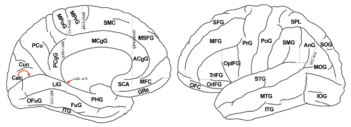
A Klein, T Dal Canton, SS Ghosh, B Landman, J Lee, A Worth. Open labels: online feedback for a public resource of manually labeled brain images. 16th Annual Meeting for the Organization of Human Brain Mapping (2010).
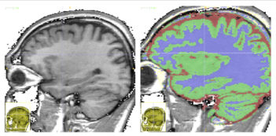
B Avants, A Klein, N Tustison, J Woo, JC Gee. Evaluation of open-access, automated brain extraction methods on multi-site multi-disorder data. 16th Annual Meeting for the Organization of Human Brain Mapping (2010). Data.
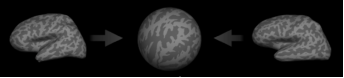
A Klein, SS Ghosh, B Avants, B Fischl, T Yeo, JJ Mann, RV Parsey. An evaluation of volume- and surface-based nonlinear registration of human brain MRI data. 15th Annual Meeting for the Organization of Human Brain Mapping (2009). NeuroImage 47: S123.
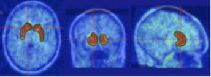
C DeLorenzo, A Klein, A Mikhno, N Gray, F Zanderigo, JJ Mann, RV Parsey. A new method for assessing PET-MRI coregistration. Proc. SPIE - Medical Imaging. 7259, 72592W (2009). doi:10.1117/12.812170
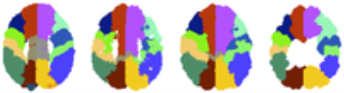
A Klein. Activity patterns in the brain: breaking up the problem into pieces. International Conference on Complex Systems (2004) talk.
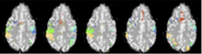
A Klein, J Hirsch. Mindboggle: new developments in automated brain labeling. 9th Annual Meeting for the Organization of Human Brain Mapping (2003).
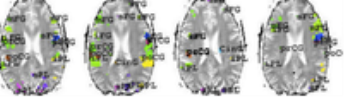
A Klein, J Hirsch. Fully-automated nonlinear labeling of human brain activity. 8th Annual Meeting for the Organization of Human Brain Mapping (2002).
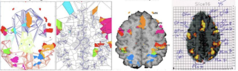
A Klein, J Hirsch. Automatic labeling of brain anatomy and fMRI brain activity. 7th Annual Meeting for the Organization of Human Brain Mapping (2001). NeuroImage 13(6): 174.